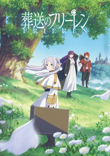
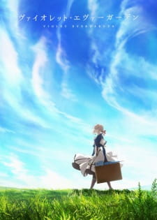

Anime adalah animasi khas Jepang yang biasanya dicirikan melalui gambar- gambar berwarna-warni yang menampilkan tokoh-tokoh dalam berbagai macam lokasi dan cerita, yang ditujukan pada beragam jenis penonton
Genre fantasi adalah genre fiksi yang melibatkan unsur-unsur yang tidak mungkin ada di dunia nyata.
Genre slice of life adalah genre yang berfokus pada kehidupan sehari-hari dan drama nyata yang muncul dari kehidupan tersebut
Genre drama adalah jenis karya sastra atau film yang menggambarkan kehidupan manusia melalui dialog dan aksi
contoh anime fantasy
Selama pencarian mereka selama satu dekade untuk mengalahkan Raja Iblis, para anggota kelompok pahlawan—Himmel sendiri, pendeta Heiter, prajurit kurcaci Eisen, dan penyihir elf Frieren—menjalin ikatan melalui petualangan dan pertempuran, menciptakan kenangan berharga yang tak terlupakan bagi sebagian besar orang. dari mereka.
Namun, waktu yang dihabiskan Frieren bersama rekan-rekannya hanya setara dengan sebagian kecil dari hidupnya, yang telah berlangsung lebih dari seribu tahun. Ketika partainya bubar setelah kemenangan mereka, Frieren dengan santai kembali ke rutinitas "biasa" mengumpulkan mantra di seluruh benua. Karena perasaannya terhadap waktu yang berbeda, dia tampaknya tidak memiliki perasaan yang kuat terhadap pengalaman yang dia lalui.
Seiring berlalunya waktu, Frieren perlahan-lahan menyadari bagaimana hari-harinya di pesta pahlawan benar-benar memengaruhi dirinya. Menyaksikan kematian dua mantan temannya, Frieren mulai menyesal telah menganggap remeh kehadiran mereka; dia bersumpah untuk lebih memahami manusia dan menciptakan hubungan pribadi yang nyata. Meskipun kisah perjalanan yang penuh kenangan itu telah lama berakhir, sebuah kisah baru akan segera dimulai.
contoh anime slice of life

Meskipun liburan sempurna bagi sebagian besar gadis seusianya mungkin adalah liburan mewah bersama orang yang mereka cintai, cara ideal Rin Shima menghabiskan hari liburnya adalah berkemah sendirian di kaki Gunung Fuji. Dari mendirikan tenda hingga mengumpulkan kayu bakar, dia selalu melakukan segalanya sendirian, dan tidak berencana meninggalkan dunia kecilnya yang terpencil.
Namun, apa yang dimulai sebagai salah satu sesi berkemah biasa Rin entah bagaimana berakhir sebagai pertemuan kejutan untuk dua orang ketika Nadeshiko Kagamihara yang hilang terpaksa berlindung di perkemahannya. Awalnya berniat untuk melihat sendiri pemandangan indah Gunung Fuji, rencana Nadeshiko terganggu ketika dia akhirnya tertidur di tengah perjalanan menuju tujuannya. Sendirian dan tanpa pilihan lain, dia mencari bantuan dari satu-satunya orang di dekatnya. Meski perkenalan mereka tergesa-gesa, kedua gadis itu tetap menikmati malam yang dingin bersama, makan ramen dan mengobrol sementara api unggun membuat mereka tetap hangat. Dan bahkan setelah saudara perempuan Nadeshiko akhirnya menjemputnya malam itu, kedua gadis itu diam-diam memikirkan kemungkinan untuk berkemah bersama lagi.
contoh anime drama
Perang Besar akhirnya berakhir setelah konflik selama empat tahun yang panjang; terbelah menjadi dua, benua Telesis perlahan mulai berkembang kembali. Yang terjebak dalam pertumpahan darah adalah Violet Evergarden, seorang gadis muda yang dibesarkan dengan tujuan menghancurkan garis musuh. Dirawat di rumah sakit dan menjadi cacat dalam pertempuran berdarah di bagian terakhir Perang, dia hanya tinggal mendengar kata-kata dari orang yang paling dia sayangi, namun tidak mengerti maksudnya.
Sembuh dari luka-lukanya, Violet memulai hidup baru dengan bekerja di CH Postal Services setelah berselisih dengan keluarga wali barunya. Di sana, dia secara kebetulan menyaksikan karya "Boneka Memori Otomatis", amanuense yang menuliskan pikiran dan perasaan orang ke dalam kata-kata di atas kertas. Tergerak oleh gagasan tersebut, Violet mulai bekerja sebagai Auto Memory Doll, sebuah perdagangan yang akan membawanya pada sebuah petualangan, yang akan membentuk kembali kehidupan kliennya dan mudah-mudahan mengarah pada penemuan jati diri.